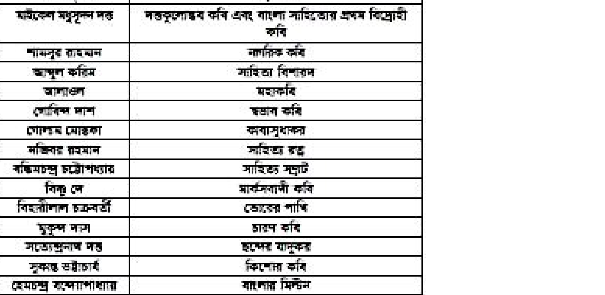

সনেটের গঠন বৈশিষ্ট্য:
• অষ্টক (Octave - ১ম ৮ চরণ): ভাবের প্রবর্তন বা সূচনা।
• ষটক (Sestet - শেষ ৬ চরণ): ভাবের পরিণতি বা সমাপ্তি।
• বাংলা সনেটের প্রবর্তক: মাইকেল মধুসূদন দত্ত (চতুর্দশপদী কবিতাবলী)।
Important literature highlights, correct spellings, and idioms:
Romantic Lake Poets:
ইংল্যান্ডের লেক ডিস্ট্রিক্টে বসবাসকারী তিনজন বিশিষ্ট রোমান্টিক কবি:
1. William Wordsworth
2. Samuel Taylor Coleridge
3. Robert Southey
Crucial Spellings & Idioms:
• Tsunami: শুরু হয় 'T' দিয়ে (T-s-u-n-a-m-i)
• Lieutenant: Lie-u-ten-ant (মিথ্যা-তুমি-দশ-পিপঁড়া ছন্দ)
• "Take into account": Consider (বিবেচনা করা)
• "At a snail's pace": Extremely slowly (অতি ধীর গতিতে)
📐 গণিত ও জ্যামিতিক সমাধান সূত্র
বীজগণিত, পরিমিতি ও শতকরা সমস্যার দ্রুত সমাধানের ফর্মুলা:
বৃত্তের ব্যাস ও ক্ষেত্রফল সূত্র:
ক্ষেত্রফল = πr2 = π(d/2)2
ব্যাস যদি n গুণ বৃদ্ধি পায়, তবে ক্ষেত্রফল বৃদ্ধি পাবে n2 গুণ।
অতএব, ব্যাস ৪ গুণ বৃদ্ধি পেলে ক্ষেত্রফল 42 = ১৬ গুণ বৃদ্ধি পায়।
আয়তক্ষেত্রের দৈর্ঘ্য, প্রস্থ ও পরিসীমা:
ধরি প্রস্থ x, দৈর্ঘ্য 3x।
ক্ষেত্রফল 3x × x = 300 ⇒ x2 = 100 ⇒ x = 10 মিটার।
দৈর্ঘ্য = ৩০ মিটার, প্রস্থ = ১০ মিটার।
পরিসীমা = ২(দৈর্ঘ্য + প্রস্থ) = ২(৩০ + ১০) = ৮০ মিটার।
🌏 বাংলাদেশ বিষয়াবলি ও আন্তর্জাতিক জ্ঞান
প্রশাসনিক অবকাঠামো ও ঐতিহাসিক তথ্যাবলি:
বাংলাদেশ রেলওয়ের প্রশাসনিক বিভাগ (২টি অঞ্চল):
1. পূর্বাঞ্চল রেলওয়ে: যমুনা নদীর পূর্ব পাশে অবস্থিত (দৈর্ঘ্য ১,২৭৯ কিমি, সদর দপ্তর চট্টগ্রাম)।
2. পশ্চিমাঞ্চল রেলওয়ে: যমুনা নদীর পশ্চিম পাশে অবস্থিত (দৈর্ঘ্য ১,৪২৭ কিমি, সদর দপ্তর রাজশাহী)।
📌 সামুরাই (Samurai): জাপানের প্রাক-শিল্প ও সামন্ততান্ত্রিক যুগের বিশেষ যোদ্ধা শ্রেণি, যারা সম্ভ্রান্ত সামরিক ভূস্বামী ও দেয়মিয়োদের (Daimyo) প্রতিরক্ষায় নিযুক্ত থাকত।
শাহনামা (Shahnama): পারস্যের জাতীয় মহাকাব্য। কবি ফেরদৌসী রচিত এ অমর মহাকাব্য বাংলায় অনুবাদ করেন কবি মোজাম্মেল হক।
📝 ২য় অংশ: বিগত বছরের প্রামাণ্য প্রশ্নব্যাংক ও ইন্টারঅ্যাক্টিভ কুইজ
উপসর্গ মোট তিন প্রকার। যথাঃ HF বাংলা ron, তৎসম ব্য সংস্কৃত উপসর্গ এবং বিদেশি উপসর্গ। | | লাম El Beet সমূহ ! বাংলা অ, UT, অঙ্গ, জলা, জা, আড়. আল, জার, ইত , দল. lie Bred Be অমি, পর, প্রতি, ঈপ, আ. আপ, অভি, জতি | Ea লা, Fw, wom | দিত ot [wom [warmeew | || [=m] বীজনাণাতক সূত্র |
২
০.১৬২৩ - ৩১ = কত?
সঠিক উত্তর: - ৩০.৮৩৭৭
ছোট সংখ্যা থেকে বড় সংখ্যা খিয়োগ করলে ফলাফল HoT (-) হয়। অথাৎ = abbas - গু১ = (৩১ - ০.১৬২৩) | =- Joe
==================== p67_c2 ==================== RET
৩
a এবং b এর মান কত হলে a + b = 7 এবং ab = 10 হবে?
সঠিক উত্তর: a = 5, b = 2
দেওয়া আছে, a+ h="7 এ d=T =n (1) এবং gh = 10 ...... (ii) এখন (if) লং সমীকরণে এ এর যান খসিয়ে পাই (7T-bb=10 = Th-H=10 = F-56-25+10=0 | = blh-3)-2b-51=0 = (b=-2){b-5)=0 wo. h-2=0 WE, b-5=0 ] Lo গুল LbB=5 | এখানে ৮ এর মান (1) লঃ সমীক্রদে বসিয়ে পাই, যখন, h=2T=T-2=5 যখন, h=5 Ch g=T-5=2 | ১ a, by=(5,2)91, (2,5) সংস্যা
৪
নিচের কোন সংখ্যাটির মান সবচেয়ে কম?
সঠিক উত্তর: ০.০০৯
দশমিকের পরে প্রথম অংক (WORT) তুলনা করলে দেখা যায়, সবটোেয়ে কম মান রয়েছে, তাই ০.০৯১-ই Wi
৫
সনেটের দ্বিতীয় অংশকে কী বলে?
সঠিক উত্তর: ষষ্ঠক
সনেটের দুটি mer | যথাঃ অক ও WE
৬
শব্দ যখন বাক্যে ব্যবহৃত হয় তখন তাকে কী বলে?
সঠিক উত্তর: পদ
Are hs Su পুথক শব্দকে পদ বলে। যে পদ worl, Fefe ইত্যাদি যোগে প্রয়োজন মতো পরিবর্তিত হয় তাকে FO পদ বলে। যে পদের কোনো রকম পরিবর্তন হয় না তাকে WT হয় অব্যয় পল। যে পদ দ্বারা কোশো <= J 'তাকে বলা হয় ত্রিন্যাপল।
৭
'হ্রাসমান' এর বিপরীত শব্দ কোনটি?
সঠিক উত্তর: বর্ধমান
“Saree এর বিপরীত = 'বর্ষয়ান'। উল্লেখা, wee [w= | stm | Fem | fem Emm BE BE ah spelling
৮
Identify the correct spelling-
সঠিক উত্তর: Tsunami
Tsunami আশ বন্দরের ঢেউ 1 এটি একটি জাপানি শব্দ | “সু অর্থ 'বন্দর' এবং 'লামি' অর্থ “ঢেউ । Fdiom phrase
৯
The expression “take into account” means-
সঠিক উত্তর: consider
counting number b) entry into register 0) consider d} recommendation ans. C Take into account = Consider অর্থ বিবেচনা Fh; ধর্তব্যের মধ্যে আনা । [134
==================== p68_c1 ==================== সংখ্যা
১০
একটি বাঁশের ১/৩ অংশ কাদায়, ১/৫ অংশ পানিতে এবং ৬ হাত পানির উপরে আছে। বাঁশটি কত হাত লম্বা?
সঠিক উত্তর: ৪৫ হাত
ধরি, সম্পূর্ণ বাশটির দৈথ্য = x মিটার .. কাদায় আছে ঠ অংশ; পানিতে আছে Se অংশ x থা EE, x — a" = Lo! 2x + bx = x= ( “Ne ) =% 38x | = x= Se =% Mr - 38x = Hg = x ’ = = So সরল টে
১১
নাড়ী অর্থ শিরা; নারী অর্থ কী?
সঠিক উত্তর: রমণী / স্ত্রীলোক
[sina = Ed Tanke সাহলা, FEET, জলা, AT, : নু English literature
১২
Who is known as Lake poet?
সঠিক উত্তর: William Wordsworth
William Wordsworth হলেন Romantic যুগের সবচেয়ে প্রতিভাবান কবি। তিলি French Revolution দ্বারা অনুপ্রাণিত হয়েছিলেন | 'তাকে “The Poct of Mature’, ‘A Lake Peet’, ‘Poet of Childhood® বলা হয়। |
১৩
কোন সংখ্যাকে সাহায্যকারী সংখ্যা (Helper Digit) বলা হয়?
সঠিক উত্তর: ০ (শূন্য)
গণিতে শূন্য (9) সংখ্যাকে "সাহায্যকারী wd বা সাহায্যকারী অঙ্ক (Helper Digit) বলা হয়। কারণ এটি ofa মাল পদ্যতি (Place-value system). যেমল দশমিক পদ্ধতিতে macs সঠিকভাবে প্রকাশ করতে সাহায্য কারে (যেমন ১০, Yoo) এবং খদণাত্যক ও লটিল সংখ্যা ধারণার বিকাশে গুরুত্বপূর্ণ ভুমিকা রাখে।
১৪
বাংলা সাহিত্যের অবক্ষয় যুগ কোনটি?
সঠিক উত্তর: ১৭৬০-১৮৬০
14. বাংলা লাহিত্যের অবক্ষয় মুগ কোলটি? a) ১৭০ ০-২৮ট ৭ b} ১৭৬০-৩৮ ৮৬ c) ১৯৩০-১৯৫৭ প)১৯৫১-২০০৩০০ও। ল্য, B Recent Publicanon 11]
==================== p68_c2 ==================== বাংলা সাহিত্যের অবক্ষয় যুগ বা যুগসন্ধিক্ষণ হলো আঠারো শতকের (PTF থেকে উনিশ শতকের মধ্যহাগ, যা মূলত ১৭৬০ থেকে ১৮৬০ সাল পর্যন্ত সময়কালক্ে বোঝায় | এটি মধ্যযুগ ও আমুনিক্ক যুগের fw, যেখানে ভারতচনল AUST মৃত্যু (১৭৬০) থেকে মাইকেল মধুসূদন weed আবিতাবের পূর্ব পর্যন্ত সময়টি মৌলিক সাহিত্যিক সৃষ্টির অভাবে এবং অনুবরাণপ্রবণতার কারণে অবক্ষয় বা "প্রায় শূন্যতার যুগ' হিসেবে পরিচিত ৷ vocabulary
১৫
The meaning of ‘posterity’ is-
সঠিক উত্তর: future generations
Posterity অর্থ ভবিষ্যদ প্রজন্া seer: পূর্ব পুরুম ৷ কিন্তু, Prosperity অর্থ উন্নতি; mem Possession অর্থ অধিকার; দখল; 15
১৬
কোন দ্রব্যের ক্রয়মূল্য বিক্রয়মূল্যের ৪/৫ ভাগ হলে শতকরা কত লাভ হবে?
সঠিক উত্তর: ২৫%
ঘরি, wp ৪ টাকা এবং বি্ররমুল্য ৫ টাকা লাঙল ৫ - গত -১ টাকা J SEER] লাভ = (3 300) ঘুড়ে ২৫
১৭
বাংলা বর্ণমালায় মোট বর্ণ কতটি?
সঠিক উত্তর: ৫০টি
বাংলা ভাষার বর্ণ eff | উল্লেখ্য,
_মাঘ ][লম্লদনট] adel | weap ক রা মা রা যারে চার | wm | ৮ [a | | mim | ow | ৪ | 8B |
১৮
নিপাতনে সিদ্ধ ব্যঞ্জনসন্ধি কোনটি?
সঠিক উত্তর: পরস্পর
ব্যাকরণের সাধারণ বা বিশেষ oe নিয়মানুসারেই যখন কোনো কর্ম ব্যাখ্যা ক্রা যায় না, অথচ তা সংঘটিত হয়, তখন সেই ব্যতিত্রমকে বৈধতা দেয়ার নাম শিপাতনে সিদ্ধ। femurs সিদ্ধ কিছু ome gy weed, যোড়শ, পরপর, দ্যুলোক, গোষ্পদ, একাদশ, বৃহস্পতি ইত্যাদি । roves সূত্র
১৯
a + b = 4 এবং a - b = 2 হলে ab এর মান কত?
সঠিক উত্তর: 3
1135
==================== p69_c1 ==================== সো] দেওয়া আছে, ও+ম-মও৫-৪-? আমরা জি, dab =(a + BY - (a - bY = dahb=8-22=60 প্লট = =15 |
২০
“তুমি না বলেছিলে আগামীকাল আসবে?” এখানে 'না' কী অর্থে ব্যবহৃত হয়েছে?
সঠিক উত্তর: অনুরোধ / নিশ্চয়তা অর্থে
এখানে 'না' হলো ree বা প্রশ্নবোধক অর্থে ব্যবহৃত হয়েছে। SURES বাকো ww, “কি, “কোথায়' | ইত্যাদি থাকে। প্রশ্নাত্যক ART প্রশ্ন (7) চিহ্ন বসাতে |. হয়া
২১
তৈরি পোশাক রপ্তানিতে শীর্ষ দেশ কোনটি?
সঠিক উত্তর: চীন
আপডেট তথ্য পরিবর্তনশীল প্রশ্ন পার্টে দেখুন। verh
২২
Which one is a modal auxiliary?
সঠিক উত্তর: must
Can, could, may, might, will, would, shall, should, ought to auxiliaries বলে।
২৩
‘প্রাচ্যের ড্যান্ডি’ নামে খ্যাত কোনটি?
সঠিক উত্তর: নারায়ণগঞ্জ
Soiution ডতরখয, _ Era FE লাম | omEr | [ww] vacabulary
২৪
Time after twilight and before night is called-
সঠিক উত্তর: Dusk
Twilight অর্থ গোধুলি। Dusk অর্থ রাত শুরুরবা | 'ঘল অস্কার শুরুর ঠিক পূর্বক্ষণ। Dawn অর্ণ ভোর | হওয়া! আলো ফৌটা/ উনোধিত হওয়া Moonlight অর্থ CET | Midnight অর্থ মধ্যরাত | Time after twilight and before night is dusk = গোধূলীর পর এবং রাহের পুর্ক্ষণ হল Dusk. Recent Publicanon 11]
==================== p69_c2 ====================
২৫
বাংলাদেশ রেলওয়ে প্রশাসনিক কাজের সুবিধার্থে কয়টি অঞ্চলে বিভক্ত?
সঠিক উত্তর: ২টি (পূর্বাঞ্চল ও পশ্চিমাঞ্চল)
বাংলাদেশ রেলওয়ের পরিচালনা ween দুইটি RCA ভাগ করা হয়েছে। এগুলো হলোঃ যমুনা নদীর পূর্ব পাশে পূর্বাঞ্চল রেলওয়ে এবং অপরটি যমুনা নদীর পাঁস্টিম পাশে পশ্চিমাঞ্চল রেলওয়ে of পাশের অংশের দৈর্ঘ্য ১,২৭৯ কিলোমিটার এবং পশ্চিম পাশের wwe Rd ১,৪২৭ কিলোমিটার । spelling
২৬
The spelling of which one is correct?
সঠিক উত্তর: Millennium
Licutenant অর্থ ব্যাস্টেন পদমর্যাদার Tes সেনাবাহিলীর অফিসার ।
২৭
কবি ফররুখ আহমদকে কী বলা হয়?
সঠিক উত্তর: মুসলিম রেনেসাঁর কবি
মুপশিম রেনেধার কবি বলা হয় ফররুখ আহমদকে | নিচে কিছু কবির 'উপাধি দেয়া হলো-_ লেখক বা কলির লাম বন্দি HAT দাশ তন্ন হললের কান, TF TE EA, Te কারি, শ্রকৃতির oft woz =f, চিত্রজপসয় কৰি, EEE কৃষি ॥ TEEN কবি এবং বাংলা EE প্রন feng Ear] wm] [ mwme | EET dd

লেখক বা কবির নাম
উপাধি ও পরিচিতি
ফররুখ আহমদ
মুসলিম রেনেসাঁর কবি
জীবনানন্দ দাশ
রূপসী বাংলার কবি, তিমির হননের কবি, নির্জনতম কবি, ধূসর পাণ্ডুলিপির কবি, চিত্ররূপময় কবি
মাইকেল মধুসূদন দত্ত
অমিত্রাক্ষর ছন্দের প্রবর্তক, বাংলা সাহিত্যের প্রথম সনেট রচয়িতা, আধুনিক বাংলা নাটকের জনক
কাজী নজরুল ইসলাম
বিদ্রোহী কবি, জাতীয় কবি
২৮
একটি আয়তক্ষেত্রের দৈর্ঘ্য প্রস্থের তিনগুণ। আয়তক্ষেত্রটির ক্ষেত্রফল ৩০০ বর্গমিটার হলে পরিসীমা কত মিটার?
সঠিক উত্তর: ৮০
[1136
==================== p70_c1 ==================== ঘরি, প্রস্থ ক মিটার হলে, দৈখ্য oF মিটার । HACE, তব = gan = T= hoo J. F=lo 21 ১৪ মিটার হলে , of wo Fabry . পরিসীমা = also + so) = vo সিটার। |
২৯
“সামুরাই” শব্দটি কোন দেশের সাথে সম্পর্কিত?
সঠিক উত্তর: জাপান
'সামুপ্রাই' ছিল জাপানের প্রাক-শিল্প যুগের fers যোদ্ধা cf) যারা cme প্রত্ত বা ভাইনিয়োদের (Daimyo) হয়ে কাছ করত এবং 'সেবা TEE তাদেরকে সামুরাই যোদ্ধা বলা হত্যোে। আর এদের উদ্দেশ্যে সামুরাই শব্দ ব্যবহৃত হত | |
৩০
ড. মুহম্মদ শহীদুল্লাহর মতে চর্যাপদের রচনাকাল কোনটি?
সঠিক উত্তর: ৬৫০–১২০০ খ্রিস্টাব্দ
Solution: ঢাপলের রচনাকাল ছ_ মুহম্মদ SIE মতে TR > লশমাশ | ডগ? বিল্লাম্দে লা TEETER = বালা FYE TEE | EET - লালা RE TEE ।
৩১
“শাহনামা” বাংলায় অনুবাদ করেন কে?
সঠিক উত্তর: মনিরউদ্দীন ইউসুফ / মোজাম্মেল হক
ফারসি ভাষায় রচিত এ মহ্যকাব্যটি বাছলায় wm | | করেন CET হক্ক।। উল্লেখ্য, শাহনামা পারস্যের (বর্তমাল ইরান) কবি ফেরলৌসীর দ্বারা লিখিত একটি দীর্ঘ মহাকাল | এটি একই সাথে ইরানের এবং সারা বিশ্বের wi ভাষাভাষী লোকদের wer জাতীয় মহাকাব্য । CFT ৯৭৭ থেকে odo সালের মধ্যে wo বছরের অধিক মময় ধরে এই মহাকাব্য রচনা করেন। শাহনামায় | প্রায় ষাট হাজার rw রয়েছে। ইরানের ইতিহাস ও এতিহাকে তুলে আনা হয়েছে এই মহাকাশ্যে ৷ সংখ্যা
৩২
কোন ভগ্নাংশের লবের সাথে ৭ যোগ করলে ভগ্নাংশের মান ২ হয় এবং হর থেকে ২ বিয়োগ করলে মান ১ হয়। ভগ্নাংশটি কত?
সঠিক উত্তর: ৩/৫
ি, SRE লব এবং হর 7 . et = z প্রশ্নমতে, ore =2 nn 0) | 5-3 eS DN (1)
==================== p70_c2 ==================== (if) নং হতে পাই, 55 =1 ০ আল. (TE) এর মাল (i) নং সমীকরণে বসাই +7 —_—=7 ¥ = xt+7=2y = y-2+7=2y ডাল ঢ' এর মান (iif) লহ সমীকরণে বসাই , এ x=5=2=3 oo নিরেয eae : অপশন এ) দিয়ে Test 39g +7 10 এখানে, সা পাল 257) = আবার, 3.7-3° 1 হ্য়। oo নিরেয় sme :
৩৩
বাংলা ভাষায় মৌলিক ধ্বনি রয়েছে কতটি?
সঠিক উত্তর: ৩৭টি
বাংলা ভাষায় মৌলিক wf আছে ৩৭টি । এই স্ানিগুলোকে আবার ২ ভাগে ভাগ করা হয় (vee এবং ব্যদ্বনপানি])। মৌলিক wef ৭টি এবং মৌলিক agra ৩০টি | আর বাংলা বর্ণমালায় মুল বর্ণের সংখ্যা রয়েছে ৫০টি।
৩৪
ইউরিয়া সারের কাঁচামাল কোনটি?
সঠিক উত্তর: প্রাকৃতিক গ্যাস (মিথেন)
আমাদের 'দেশে ইউরিয়া সারের প্রধান Fram মিথেন গ্যাস । সার হিসেবে এর ব্যাপক ব্যবহার রয়েছে। ইউরিয়া একটি নাইট্রোলেনঘটিত জৈব যৌগ | নাইট্রোজেন সপ্যাসকে বিশেষ প্রক্রিয়ায় আ্যামোনিয়ায় রূপান্তরিত কলা হয় এবং পরে আমেোনিয়া থেকে ইউরিয়া প্রস্তুত করা হয়। ইউরিয়লায় নাইট্রোলেনের পরিমাণ 88% | এ সার aE সবুজ ও Ey করে। ইউরিয়া একটি অন্রধর্মী সার। সংখ্যা
To be in a state of hostility b) Ata standstill 0) Ina state of understanding d} State of friendship ans. A | | এখানে At daggers drawn uf দুই পক্ষের | মধ্যে ঝগড়া বা রেষারেধি FET থাকা। উল্লেখ্য, Ata standstill অর্থ নিশ্চল, অচলাবস্থায় ।
৩৮
কোনটি উপন্যাস?
সঠিক উত্তর: লালসালু
maa উপন্যাসটির রচয়িতা হলেন আবদুর রাজ্জাক্য। অন্যদিক্কে, 'নেমেসিস' হলো TE মোমেনের | | একটি বিখ্যাত নাটক: সোনার তরী” হলো AE ঠাকুরের একটি Frame কাব্যঘহ এবং restr হলো রাজসেখর বসুর একটি Ty | Number
৩৯
What is the plural form of the word 'Radius'?
সঠিক উত্তর: Radii
==================== p71_c2 ==================== কতভুলো Noun এর মাখের Vowel এবং Consonant “fda করে Plural করতে হয়। যেমনঃ Singular Louse Dormourse house | Plural | | Dormice | Gender
Telecast এরই Past এবং Past participle #9 এবহ | তাই এখানে Telecast-2 বসবে । MIE অর্থ আগামী সপ্তাহে বাংলাদেশ টেলিভিশনের নতুন অনুষ্ঠান সম্প্রচার করা হবে ।
৪২
বিক্রয়মূল্য দ্বিগুণ হলে শতকরা লাভ বা ক্ষতির হার কেমন হবে?
সঠিক উত্তর: লাভ বা ক্ষতি নির্ণয়যোগ্য নয় (শর্তাধীন)
ঘরি, খিক্রয়মূণা টাকা oo TARR ax টাকা ক্ষতি হয় - ২৮- x= x TT - শতকরা ক্ষতি হয় = ( ক x ১০০) % = ea% ধরি, ক্রয়মূল্য = ১০ এবং বিত্রয়মূল্য - ৫ :. শতকরা ক্ষতি হয় - [২5 x ১০০) % = ৫০% সীজনাযাণিতিক সূত্র
৪৩
m = 2 হলে 27m^3 + 54m^2 + 36m + 8 এর মান কত?
সঠিক উত্তর: ৫১২
দেওয়া আছে, 27m’ + 54m? + 36m + 3 =(3mP+3xGmPx2+3xIm=x 22 +205 =(Im+2y-5 ={(3x2+2Y-5 =§-5 =512-5=507
Bluc blood অর্থ অভিলাতঃ উচ্চ বছশজাত। | Blood of blue color অর্থ নীশ রহয়ের ¥% 1 Sound health অর্থ 57 দেহ. | Scoundrel অর্থ বদমাশ; 548
৪৬
মুঘল সম্রাট বাবরের সমাধি কোথায় অবস্থিত?
সঠিক উত্তর: কাবুল (আফগানিস্তান)
মুঘল সম্রোলযের প্রতিষ্ঠাতা সম্রাট বাবরের সমাধি আফলগাশিস্মনের Ameen কাবুলে অবস্থিত । বাবর ১৫৩০ সালে WIT মারা গেলেও, তার ইচ্ছা অনুযারী পরে দেহাবশেষ সরিয়ে কাবুলের এঁতিহাশিক বাগে arm বা বাবর গার্ডেনে সমাহিত করা হয়। সংখ্যা
৪৭
দুই অঙ্কবিশিষ্ট একটি সংখ্যার অঙ্কদ্বয়ের সমষ্টি ১৫ এবং অন্তর ৩ হলে সংখ্যাটি কত?
সঠিক উত্তর: ৯৬
এই. ধরণের অংকে আপনি সল্লাসরি উত্তর থেকে CSB] FATA | অপশল 2) এর CRT =T +B =15 এবং 7 x § = 56. EE
৪৮
চিনির মূল্য ১০% কমে যাওয়ায় চিনির ব্যবহার শতকরা কত ভাগ বাড়ালে চিনি বাবদ খরচ অপরিবর্তিত থাকবে?
সঠিক উত্তর: ১১.১১%
চিনির মূল্য ১০% কমে যাওয়ায় ffm বর্তমান TT = ১০০ - ১০ = ৯০ টাকা এখন, ৯০ টাকায় চিনির ব্যবহার বৃদ্ধি করতে হবে = ১০ | | টাকা -. ১০০ টাকায় চিনির ব্যবহার বৃদ্ধি করতে হবে So x doo 3 =o =n TE
৪৯
What is the meaning of ‘concise’ in English?
সঠিক উত্তর: brief and comprehensive
Concise অর্থ nfs | | বীজগাণিতিক সূত্র
৫০
a - 1/a = √3 হলে, a^3 - 1/a^3 এর মান কত?
সঠিক উত্তর: 6√3
==================== p72_c2 ==================== 1 দেয়া আছে, a” + 2 = (= নে 2) +2xagx ! = (5\3) +2 ={25=3)+2 =75+2=17
৫১
শতকরা বার্ষিক ৭ টাকা হার সরল মুনাফায় ৬৫০ টাকার ৪ বছরের মুনাফা কত?
সঠিক উত্তর: ১৮২ টাকা
আসল, p = ৬৫০ SRT মুলাফার হার, r = ৭% সময়, p= 1% TES | So মুলাফা,ান- কতা আমরা জানি, 1= চুল সা ২ ২ ২৭৩ টাকা
৫২
বিশেষণের উদাহরণ কোনটি?
সঠিক উত্তর: সুন্দর
বিশেষণের উদাহরণ হলো চৌকস | উপ্লেখা, Fem | fer | লেশমন [| Few | wm | Et | sw | wn | বহল |] নিলে | | Arm | Narration
৫৩
The teacher said ‘Be quiet’. Change into indirect speech:
সঠিক উত্তর: The teacher told the students to be quiet.
Imperative sentence এ Reporting verb টি অনুপ্লোধ বুঝালে Roquest, আদেশ বুঝালে Order! urge! command, উপদেশ ATT Advice, WY “tell” ছারা পরিবর্তিত হয়। cra অত শিক্ষক বললেন, 'ছাত্রল্না শান্ত হও” ।
৫৪
'পদ্মাবতী' কি ধরনের গ্রন্থ?
সঠিক উত্তর: রোমান্টিক প্রণয়োপাখ্যান (অনুবাদ কাব্য)
আপাওল রচিত ম্রহগুলি হলোঃ পদ্মাবতী, তোহ্ফা, সরফ্লমূলক বলদিউজ্জামাল, zoe, Braman, উল্লেখ্য, কবি wren ‘Emmy রাজসভার কবি ছিলেন। আরাকানকে বাছলা সাহিত্যে "রোসাং' বা mT sme অতিহিত বরা হয়েছে। 1339
'ক' এবং 'খ' একত্রে একটি কাজ ১২ দিনে করতে পারে। 'ক' একা কাজটি ২০ দিনে করতে পারলে 'খ' একা কাজটি কত দিনে করতে পারবে?
সঠিক উত্তর: ৩০ দিনে
চল | ক'ওসএবতে 12 দিনে করে = | অংশ কাজ Lo Fada | দিনে করে = 75 অংশ কাজ | আবার, ক একা 3 কাজটি 1 দিনে করে = op অংশ 1 1 1 . সব একা একদিনে করে - (= ; %) = 35 অংশ কাজা অর্থাৎ খ যয অংশ কাজ করে = | দিনে : a খ। বাসম্পূর্ণ অংশ কাজ করে = 20 - 30 দিনে ২ জনের FE x ১ WH কাজ horteut: ঘা ৩ সনের কাম -. ১ জনের কাজ 2 = 12 এ সীল 0-12 30 Serferce correction
৫৬
Choose the correct sentence-
সঠিক উত্তর: He is senior to me.
যদি কোনো বাক্যে Each of the, one of the, ncither of the, either of the পালে EEE এদের | প্রে Noun (plural) কিন্তু, Verb (singular) ও Possessive (singular) 27 | বাক্যের wy Fasten ছাত্রের প্রত্যেক একটা করে পুরষ্কার পেয়েছিল | Transfution
৫৭
“ট্রেনটি ঢাকা যাবে” এর সঠিক ইংরেজি অনুবাদ কোনটি?
সঠিক উত্তর: The train is bound for Dhaka.
CTL স্নানের উদ্দেশো রওলা করা অর্থে Bound | for 31 | The train is leaving for Dhaka %9 ট্রেনটি ঢাকার উদ্দেশো SM | The train is going to Dhaka অর্থ ট্রেনটি ঢাকা 28 | The train went to
Dhaka অর্থ ট্রেনটি ঢাকা গিয়েছিলো ।
৫৮
'ক্রীতদাসের হাসি' কার রচনা?
সঠিক উত্তর: শওকত ওসমান
'ত্রীতদাসের হাসি' শওকত ওসমান (১৯৬২) রচিত প্রতীকঘর্মী উপন্যাস | 'জীতদাসের হাসি' উপন্যাসে | তম্কালীন পাক্ছিনিদের fe শাননের সমালোচনা করা হয়েছে। এটি শওকত ওসমানের সর্বশ্রেষ্ঠ উপন্যাস বলে
==================== p73_c2 ==================== Tes | উল্লেখ্য, তার রচিত অন্যান্য উপন্যাস্্র সমাগম (১৯৮৭), টৌরসঙ্ধি (১৯৬৮), রাজা উপাখ্যান (১৯৭০), দুই সৈশিক (১৯৭৩), নেকড়ে অরণ্য (১৯৭৩) TPMT (১৯৮৩) ইত্যাদি ।
৫৯
'মৈমনসিংহ গীতিকা' কতটি ভাষায় অনূদিত হয়েছে?
সঠিক উত্তর: ২৩টি
, দীনেশচন্দ্র সেনের আগ্রহে এবং স্যার আশুতোষ মুখোপাধ্যায়ের পৃষ্ঠপোষকতায় চষ্ট্কুমার দে 'মৈমনসিংহ গীতিকা' সংগ্রহ করেন। এটি ২৩টি ভাষার অনুদিত হয়। মৈমনসিংহ Fife বাংলা লোকগীতির একটি ভাগ। vocabulary
৬০
Botany is to Plants as Zoology is to-
সঠিক উত্তর: Animals
‘Botany” অর্থ উদ্থিদবিদ্যা আর Zoology” wd প্রাণশিদ্যা। “Plants® = উদ্থিল আর *Animals™ =f et | এখানে Botany আলোচনা করে Plants fg আর Zoology আলোচনা কারে Animals Torn) উল্লেখ, Fauna is দ্বারা কোনো শির্দিষ্ট অঞ্চলের সামগ্রিক প্রাণিকুলক্ষে বোঝানো হর়।
৬১
“সই কে শুনাইল শ্যাম নাম” কার উক্তি?
সঠিক উত্তর: চণ্ডীদাস
বাছলা সাহিত্যের মধ্যযুগের বিশ্যাত কবি চতীদাস এর fare পছক্তি] "শুন হে মানুষ ভাই, সবার উপরে মানুষ সত্য তার উপরে WE, সই, কেবলা SIE শ্যাম STAY, "আমার বুয়া আন বাড়ী যায়, আমার আঙিনা foam’ | চট্টাদাসক্ষে বাংলা ভাষার ল্রথম মালবতাবাদী কবি বলা হয়। Noun
৬২
Which word is noun?
সঠিক উত্তর: Acceptance
যে সবল Noun ছারা নির্দিষ্ট কোনো ব্যক্তি, বলব, স্থালের নাম না বুঝিয়ে একজাতীয় সকলকেই বোঝায় তাদেরকে Common noun শপলী। FRET একের অধিক বলে এদেরকে পণনা WA যায়। যেমন Man, girl, boy, student, teacher, doctor, book, pen, pencil, cow, candle, sheep, clephant, fish, river, flower, bee, soldier, king, capital, city, ring, country, robber, table, chair ইত্যাদি |
৬৩
১ নটিক্যাল মাইল = কত কিলোমিটার?
সঠিক উত্তর: ১.৮৫২ কিমি (বা ২০২৫ গজ)
(141)
==================== p74_c1 ==================== নটিক্যাল মাইল নৌ পথ বা আকাশ পথের ond | | নির্ণয়ে ব্যবহৃত পরিমাণের একক । ১ নটিক্যাল মাইল সমান ১,৮৫২ মিটার বা ৬০৭৬.১২ হুট। এটি সিস্টেম অফ ইন্টারন্যাশনাল (এস আই) একক নয় (যদিও sree ব্যাবহারের জন্য বি আই পি এম কর্তৃক Tr) | আর ১ নটিক্যাল মাইল = ২০২৫ THIS নটিক্যাল মাইল = ১.৮৫৩ কিলোমিটার (am)
৬৪
মুক্তিযুদ্ধের ১ নম্বর সেক্টর কোনটি ছিল?
সঠিক উত্তর: চট্টগ্রাম ও পার্বত্য চট্টগ্রাম
মুক্তিযুদ্ধের $ নম্বর সেক্টর ছিলো চট্টগ্রাম Seer, সেক্টর কমান্দার বা প্রধান eT mE EE ; CR TRAITS কষহগাল (TERE) | Gas, শান্তা চট্টগ্রাম এল, | এবং মেলর A ইসলাম (aE | RTA হেলার নুহরী ন্লীয় Ferman) HTL সমস্ম এলাকা 2 CRE পালেল CHT (এলিল- কামলা, WME FTE এক, | CTE) FT, মেলার a টি.এম. TRE শহত্র , করিদপুর ও । ছায়লার [মোস্টেছা-চিসেদর ) CTT হেলার 'নংশনিশেষ err মীয় শক্ত আলা Fors পাস্ষিম এলাকা, দিলেট-ভাইকি সড়ল থেকে TFT এক TER ie ik Ls br NE (IRE TATER Ere সায়া, TR এবং WTA মেল্রর জানু EE Eh (a A WTS দেলার EA | CFT [RITA এম এ ললিল) দই CEE হেলকোয়াটাযর ছিল ক্ল্যানীতে ॥ (TRF এম সজ্জা তাহের [৩ SEE ময়মলাসংহ ও GTS হেলা fi) একং (EWE লিডার এস | aE [৩ SEE)
৬৫
বাংলাদেশ ট্যারিফ কমিশন কোন মন্ত্রণালয়ের অধীন?
সঠিক উত্তর: বাণিজ্য মন্ত্রণালয়
rf কমিশন বাণিজ্য মন্ত্রণালয়ের অধীনে | বাণিজ্য মন্ত্রণালয়ের অধীনে যে সকল মন্ত্রণালয় ররেছেয বাংলাদেশ রপ্তানি উল্লয়ন ব্যুরো, ট্রেডি: কপোরেশন অব | বাংলাদেশ , ইনস্টিটিউট অন BIOTEC আকার্রন্ট্ান্টস অন বাংলাদেশ , বাংলাদেশ বৈদেশিক্ক বাণিজ্য ইনস্টিটিউট, অফিস অব দা রেলভিস্টার অব দায়েন্ট সক কোম্পানি wre ফার্মাস, ইনস্টিটিউট অব কস্ট ws ম্যানেজমেন্ট একাউন্ট্যান্ট অব বাংলাদেশ, আমদানি ও রপ্তানি নিয়ন্ত্রণ অধিদজ্র , জাতীর cere অধিকার সংরক্ষণ অধিদপ্তর | স্ব; |
৬৬
বৃত্তের ব্যাস ৪ গুণ বৃদ্ধি করলে ক্ষেত্রফল কতগুণ বৃদ্ধি পাবে?
সঠিক উত্তর: ১৬ গুণ
==================== p74_c2 ==================== ঘরি, বৃত্তের ব্যাস =x :. বৃত্তের ব্যাসার্ধ হু phone - (২) মস্গ্ম এখন ZT 8 গুণ করা হলে ATA হবে Bx Bx Lo শ্যাসার্থ- 3 :. নতুন ক্ষেত্রফল হবে ল্যাস ® =mx 2 =k x (= Ey ) :. see শেত্ফল বাড়ে ১৬ হুণ। Preposition
৬৭
He has been ill ......... Friday last.
সঠিক উত্তর: since
Present Perfect Continuous Tense 8% CRUD OTM TE থাকলে ASE সময় (Period of time) এর পূর্ণে "107 এবং নির্দিষ্ট সময় (Point of time} এর “Lf ‘since’ শসে। যেমন [1 has been drizzling since moming সেকাল থেকে জঅড়িকুড়ি/ বিরিসখিরি (হালকা) বৃষ্টি হচ্ছে) ।
৬৮
“ডাক্তার ডাক” এখানে 'ডাক্তার' কোন কারকে কোন বিভক্তি?
সঠিক উত্তর: কর্মকারকে শূন্য
“ETE ডাক' বাক্যটিতে 'ডাক্তার' শব্দটি কর্মকারকে শূন্য বিউক্তি। ace আশ্রয় করে কর্তা ক্রিয়া সম্পন্ন করে, তাকে কর্ম কারক বলে। কী/ কাকে প্রশ্ন করলে কর্মকারক পাদ্য়া যায়। LE £9. 388, ৮১, Ob - এর পরবর্তী সংখ্যাটি কত? a) iv b) 3% cli dy & ans. C ধারাটির নিচের মতো করে এগিয়েছে প্রথমে ১২ এর AF = ১২১ = ১৪৪ ৯ এর বগ - ৯২ - ৮১ bg f= ড২- ob এবং ৩ এর বর্গ গুল ৯
৬৯
১৪৪, ৮১, ৩৬ - এর পরবর্তী সংখ্যাটি কত?
সঠিক উত্তর: ৯
৭০
সৌরজগতের কোন গ্রহের সর্বাধিক উপগ্রহ রয়েছে?
সঠিক উত্তর: শনি (১৪৬টি)
নি এর চত়ুদিকে তিনটি বলয় afte বেইন বারে AACE | এর ৮২টি Teme আছে। chess শনি a Ber সর্বাধিক off সৌরজগতের দ্বিতীয় বৃহত্তম গ্রহ। TERM, ইয়া, ছাইওল, ব্যালিপাস এর প্রধান Tere | জোযোতিবিদগণের বারণা, শনি গ্রহের চতৃুদিক্ে TERETE বলয় ACE | 1341